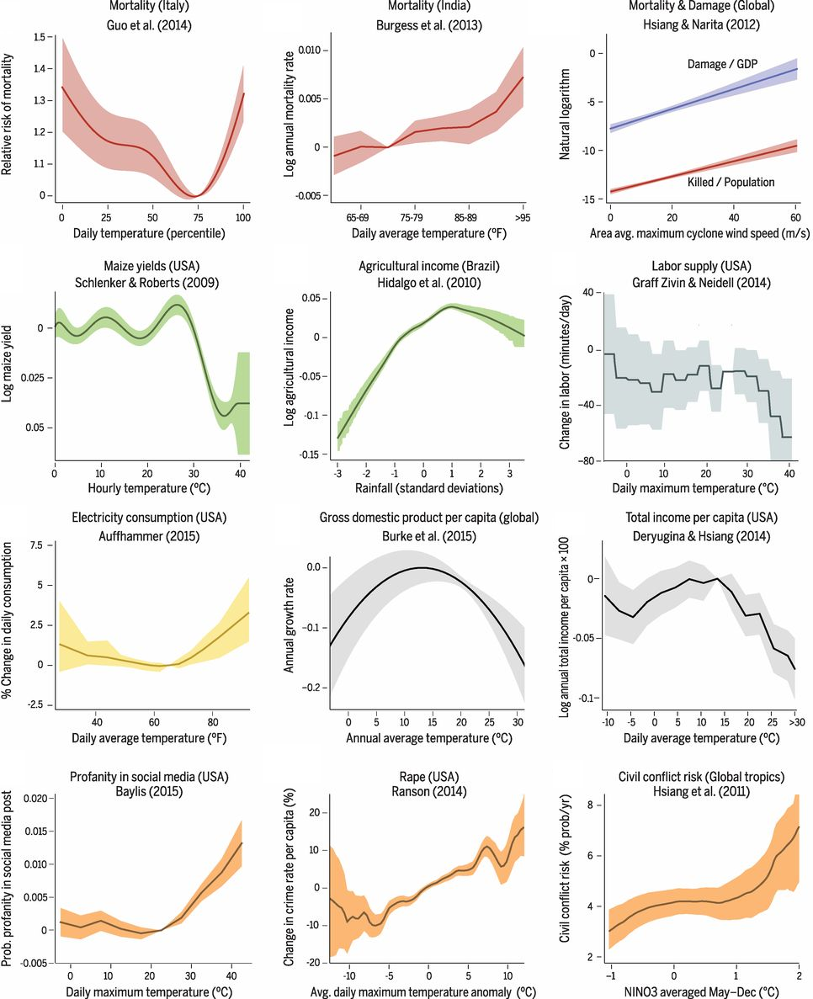

    <main class="jupyter-page">
    <div class="jb_cell">

<div class="cell border-box-sizing text_cell rendered"><div class="inner_cell">
<div class="text_cell_render border-box-sizing rendered_html">
<h1 id="Weather-Panel-Tutorial">Weather Panel Tutorial<a class="anchor-link" href="#Weather-Panel-Tutorial"> </a></h1><hr>
<h1 id="Introduction-to-the-Tutorial">Introduction to the Tutorial<a class="anchor-link" href="#Introduction-to-the-Tutorial"> </a></h1><p>Welcome to the Weather Panel Tutorial!</p>
<p>The use of econometrics to study how social, economic, and biophysical
systems respond to weather has started a torrent of new research. It
is allowing us to better understand the impacts of climate change,
disaster risk and responses, resource management, human behavior, and
sustainable development. Here are some of the relationships that have
been uncovered in recent years:</p>
<p>
Source: <a href="https://science.sciencemag.org/content/353/6304/aad9837">Carleton and Hsiang (2016)</a>.</p>
<p>This tutorial will walk you through the steps necessary to relate
socioeconomic outcomes to weather data at high resolution. We will
cover:</p>
<ol>
<li>How to find and use weather data, and what you should be aware of when using it.</li>
<li>How to relate your socioeconomic outcomes to weather variables, and
develop your regression specification.</li>
<li>How to work with shapefiles, and use them to generate your predictor variables.</li>
</ol>
<p>This tutorial will assume a knowledge of econometrics and basic
experience with one scientific programming language (Stata, R, Matlab,
Julia, python). We try to provide examples in more than one language,
so you can get started.</p>
<p>At the same time, this tutorial asks you to perform every step
yourself. In particular, we do not provide prepared weather data or a
ready-made script to prepare it. Each particular project is too specific,
so you, the researcher, need to think through everything. This
tutorial is aimed at helping you do that.</p>
<p>We will also assume that you already have a research question. There
are plenty of ways to find important questions, and maybe we will try
to offer a tutorial on that in the future.</p>
<p>A useful resource to better understand the basics of weather, climate, and the physical
changes occuring in the climate system is <a href="https://www.aeaweb.org/articles?id=10.1257/jep.32.4.3">An Economist’s Guide to Climate Change Science</a>. If you have not had experience with climate (or meterological) science, that is a great place to start.</p>
<p>For a theoretical foundation for the work of estimating weather and
climate responses,
read
<a href="https://www.annualreviews.org/doi/10.1146/annurev-resource-100815-095343">Climate Econometrics</a> by
Solomon Hsiang. This tutorial complements this kind of theoretical
foundation with more practical advice.</p>
<h2 id="Definitions-and-conventions">Definitions and conventions<a class="anchor-link" href="#Definitions-and-conventions"> </a></h2><p>We will use the following terms throughout this tutorial.</p>
<h3 id="Point-data,-region-data,-and-gridded-data">Point data, region data, and gridded data<a class="anchor-link" href="#Point-data,-region-data,-and-gridded-data"> </a></h3><p>The data being related in climate econometric studies comes in three
forms:</p>
<ol>
<li>Point data describes the conditions at a particular geographic
point in space. For weather data, this is typically the location of
a weather station or gauge. For socioeconomic data, it may be a
field, factory, or household.</li>
<li>Region data describes an aggregate over an irregular space. Typical
natural science regions include basins and water/land bodies. But
economic region data is much more common, where quantities are
totalled across an entire political unit before they are
reported. The region over which a data point is provided is the
geographic unit.</li>
<li>Gridded data provides information on a regular grid, almost always
either across latitude and longitude, or distance north and
east. Gridded data can come from remote sensing products or other
models or analyses. In the latter case, it often is not clear
exactly what is being measured (e.g., the point data at the
centroid, or the average over a rectangular region). Keeping
information at a high resolution is important to avoid misusing such data.</li>
</ol>
<p>It is always appropriate to analyze data in the spatial structure it
is offered, even if translating it to another structure would be
easier. We will discuss this more later.</p>
<h3 id="Mathematical-notation">Mathematical notation<a class="anchor-link" href="#Mathematical-notation"> </a></h3><p>In many cases, it will be useful to describe how to work with weather
variables irrespective of the specific data being represented. For
this, we introduce the following notation:</p>
<ul>
<li>$T_{it}$: Any weather variable for geographic unit $i$ in reporting period $t$.</li>
<li>$T_{ps}$: Point or grid-level weather data for location/grid cell
$p$, at a native temporal resolution indexed by $s$.</li>
</ul>

</div>
</div>
</div>
</div>

 


    </main>
    